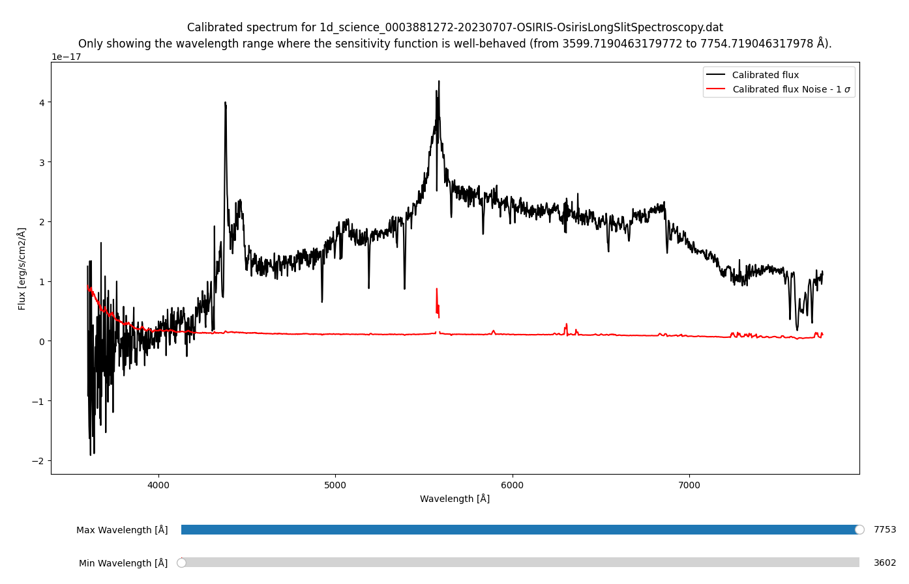

Flux calibration¶
This routine uses the sensitivity function to calibrate the extracted 1D spectra to units of \(\text{erg}/\text{cm}^2/\text{Å}/\text{s}\).
Quick start¶
The routine is called by the command:
pylongslit_flux_calibrate PATH_TO_CONFIG_FILE
The algorithm for fluxing is as follows:
The counts in the spectrum are divided by the exposure time to get counts per second.
Multiply the counts per second with the transmission_factor.
Multiply the result with the sensitivity function. This will give you the flux in units of \(\text{erg}/\text{cm}^2/\text{Å}/\text{s}\).
The routine will then display the flux calibrated spectrum (example from the GQ1218+0832 example dataset):
{kind=link}
The routine will only show the interval at which the sensitivity function
is well behaved (these are the parts of the spectrum that were not cropped during
sensitivity function fitting). However, the whole
spectrum is saved with the filename 1d_fluxed_science_FILENAME.dat.
The file has three columns: wavelength, flux, and variance.
Parameter options¶
You have to provide the path to the extinction curve as described in the chapter about the sensitivity function.
Furthermore, these parameters have to be set in the configuration file:
"science" : {
"exptime": 400,
"airmass": 1.20
}
exptime: The exposure time of the science frame in seconds.airmass: The airmass of the observation.
You can not flux calibrate several frames with different exposure times or airmasses with the same call to this routine - but for frames that have same exposure time and (nearly) same airmass, you can flux calibrate them all at once.